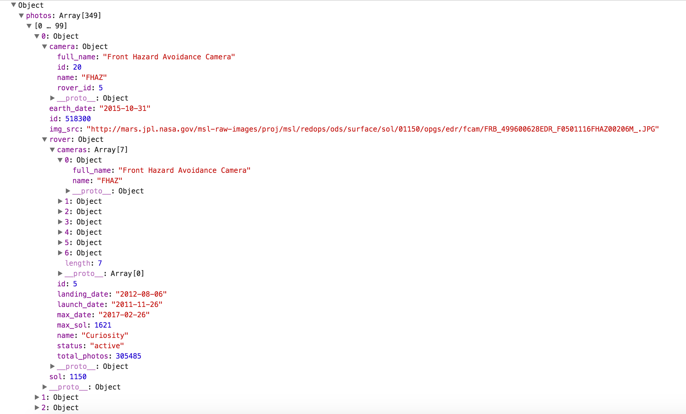

Mars Rover API
Rover API Background
The next API that this guide covers is the Mars Rover Photo API. This API allows developers access to the stored rover information on the NASA servers. This guide will supplement the current online documentation by going into more detail regarding the returned metadata from searching for various rover photos by earth date and by also showing an example of photo retrieval implementation by building on the implementation code used in previous parts of this guide. The current online documentation can be found at this link:
Mars Rover Photo API Documentation
Rover Earth-Date URL Queries
The current documentation does a good job explaining the querying technique for the mars rover photos by earth date. The basic idea is that the search query is customizable by being able to select a specific rover to query and then place the corresponding earth date you would like to return all associated photos.
Rover Query Code
An example of a query that this guide will follow can be seen below:
var exampleURL = "https://api.nasa.gov/mars-photos/api/v1/rovers/curiosity/photos?earth_date=2015-10-31"
var apiKey = 'Your Key Goes Here';
var request = new XMLHttpRequest();
request.open('GET', exampleURL + '&api_key=' + apiKey, true);
request.addEventListener('load',function(){
if(request.status >= 200 && request.status < 400){
var response = JSON.parse(request.responseText);
console.log(response);
}
else {
console.log("Error in network request: " + request.statusText);
}});
request.send(null);
Rover Returned JSON Metadata
After the above AJAX request is made, the API will return a plethora of information. The provided documentation for this API does a honorable job explaining the camera codes and designations returned in the JSON object but doesn't tie together all the possible return information for querying by earth date. An example of the returned information from a query by earth date can be seen below:

As you can see, the API returns a wealth of information from one simple request. When searching simply by earth date, the query returns an array containing ALL photos taken by that particular rover on that date with each photo being a separate object containing rover information, mission manifest information, and photo information. For the above example, this guide has simply expanded the first photo object to highlight all these details. The first drop down shows the camera information that explains which camera took the queried photo, the associated photo id, rover id, the earth date the photo was taken, and most important the server URL that can be linked to view the photo. The documentation regarding the camera designations and their acronyms can be found at the above link. What is additionally amazing about this API is that is also returns mission manifest information about the rover that took the requested photo. The API documentation regarding the manifest can be found at the developer's site below:
Mars Rover Photo API Developer DocsRover API Implementation
Here is the Java Script for the implemented example below:
var apiKey = 'Your key here';
document.addEventListener('DOMContentLoaded', submitButtonsReady);
function submitButtonsReady(){
document.getElementById('dateInput').addEventListener('click', function(event){
var request = new XMLHttpRequest();
var date = document.getElementById('dateValue').value;
var roverName = "";
var buttonStatus1 = document.getElementById('button1').checked;
var buttonStatus2 = document.getElementById('button2').checked;
var buttonStatus3 = document.getElementById('button3').checked;
if(buttonStatus1 === true)
{
roverName = "curiosity";
}
else if(buttonStatus2 === true)
{
roverName = "opportunity";
}
else
{
roverName = "spirit";
}
request.open('GET', 'https://api.nasa.gov/mars-photos/api/v1/rovers/' + roverName +'/photos?earth_date='+ date + '&api_key=' + apiKey, true);
request.addEventListener('load',function(){
if(request.status >= 200 && request.status < 400){
var response = JSON.parse(request.responseText);
document.getElementById('imageStatus').textContent = 'Found';
document.getElementById('imageID').src = response.photos[0].img_src;
document.getElementById('roverCaption').textContent = response.photos[0].rover.name;
document.getElementById('landingCaption').textContent = response.photos[0].rover.landing_date;
document.getElementById('endingCaption').textContent = response.photos[0].rover.max_date;
}
else
{
console.log("Error in network request: " + request.statusText);
}});
document.getElementById('imageStatus').textContent = 'Please try a different date or check your syntax!';
request.send(null);
event.preventDefault();
})
}
Even though there is a lot of code above for the implementation of the rover API, most of it is repeated from the previous pages of the guide. Those parts of the code will not be explained and instead this section will simply focus on the new features that apply to the rover API and querying photos by earth date. As you can see above, the code starts off with creating a variable for the API key and then creating an event listener as seen in the EPIC API tutorial. Below this, the date string is taken in and left as a full date string instead of splicing it into individual year, day, and month variables. This is because we can now extract the photo location information from a direct URL instead of having to concatenate your own. The next line of code, "var roverName = "";", creates a variable called roverName that will accept a selection from the user based off the radio button rover of their choosing. The next 3 lines of code simply retrieve the status of the radio buttons located in the HTML of the web application. This then is used to reassign the 'roverName' variable with the string value that the API accepts for querying. This is accomplished in the conditional statements.
Appending Rover Data
Now that the 'roverName' variable contains a value chosen by the user and a specific earth date is chosen, the query can be made which will return the metadata explained earlier in this module. The final new portion of code for this API is shown below:
document.getElementById('imageStatus').textContent = 'Found';
document.getElementById('imageID').src = response.photos[0].img_src;
document.getElementById('roverCaption').textContent = response.photos[0].rover.name;
document.getElementById('landingCaption').textContent = response.photos[0].rover.landing_date;
document.getElementById('endingCaption').textContent = response.photos[0].rover.max_date;
This code will append the pulled data from the JSON object and place it on the associated HTML element to display the query results to the user. For this implementation example, the guide simply accesses the first image object from the returned JSON object. The documentation link above goes into detail on how to change your query to request a specific camera from a specific rover if the developer would want less information returned from each request. This guide left the full return object to demonstrate the abundance of information this API provides. The first line, 'document.getElementById('imageStatus').textContent = 'Found';', simply lets the user know if an image was found and returned. If the AJAX status request was within the appropriate range, then this line of code will be displayed by default meaning that the query was successful. The next line, 'document.getElementById('imageID').src = response.photos[0].img_src;' is an important contrast from the previous module. As mentioned before, the EPIC API needed to concatenate an image location URL to allow the image to be displayed to the user. This API provides a bonus in that it simply returns a full URL string that can be appended on our image object as shown above. The remaining three lines simply extract the mission manifest information from the returned object and append it to the HTML to allow the user to understand the context of the rover mission and where the requested photo fits in the mission timeline.
Rover API Recap
With the new metadata options highlighted above, the remainder of the code is quite similar to the EPIC API and does not warrant summarization. The working version of the above code can be tested below. The next API will depart a bit from this API and the EPIC API in that it deals with retrieving data that is best displayed in tables instead of dealing with retrieving photo information that then is appended to the HTML.
Rover API Example
This is an example of the Rover API in action!
Tips:
- Curiosity landed on: 2012-08-06
- Opportunity landed on: 2004-01-25
- Spirit landed on: 2004-01-04
Image Results
Image Retrieval Status:Rover Name:
Landing Date:
Expected End Date: